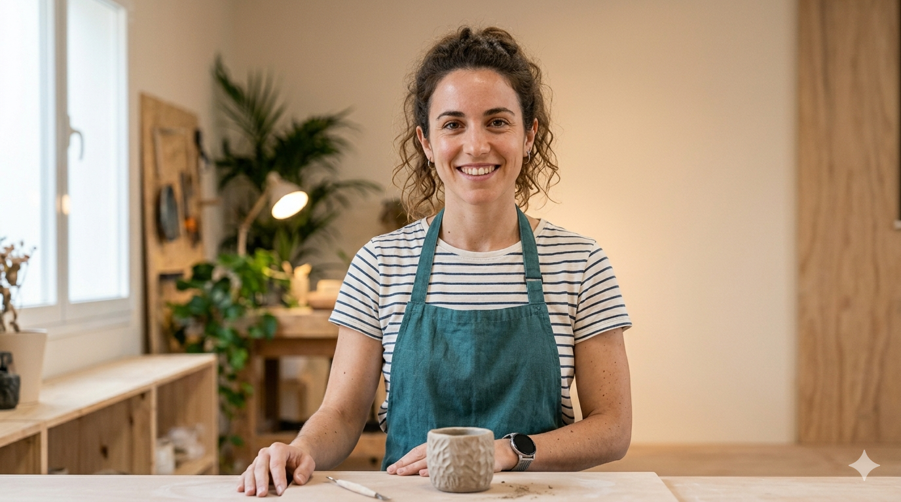

Los Ponentes
Una selección de mentes creativas que están redefiniendo el valor de lo hecho a mano.

Elena Martín
Cerámica Ancestral
Especialista en técnicas de cocción al aire libre y recuperación de barros locales.
Ver proyectos
Marc Sala
Ebanistería Contemporánea
Diseñador de mobiliario que fusiona tecnología CNC con ensambles japoneses.
Ver proyectos
Sonia Vilas
Tejido Sostenible
Investigadora de tintes naturales y fibras recuperadas de la industria textil.
Ver proyectos